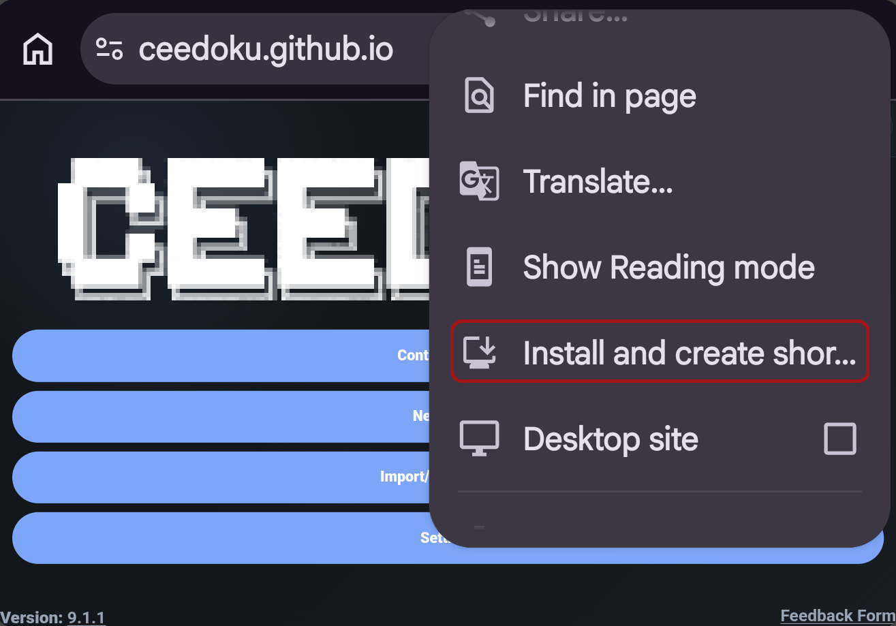
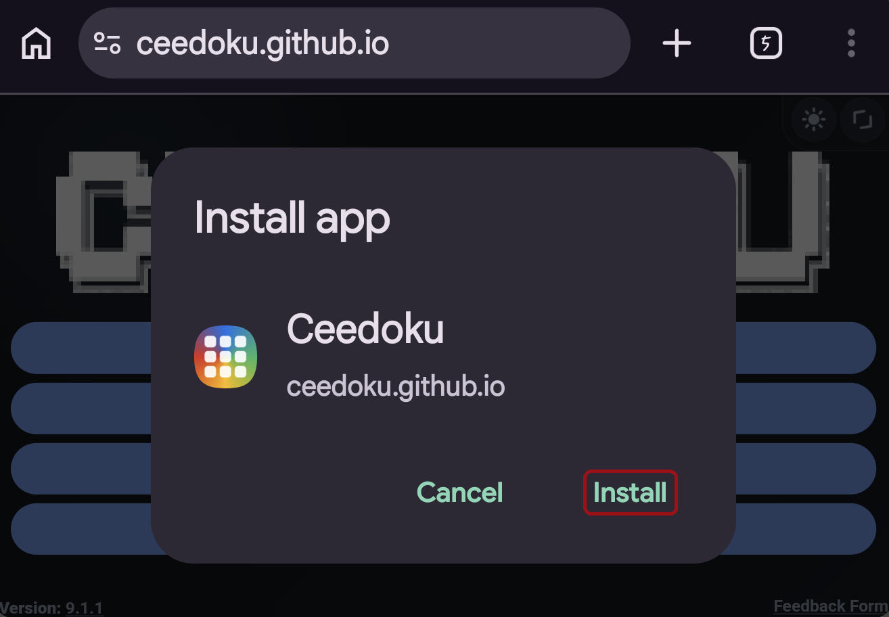
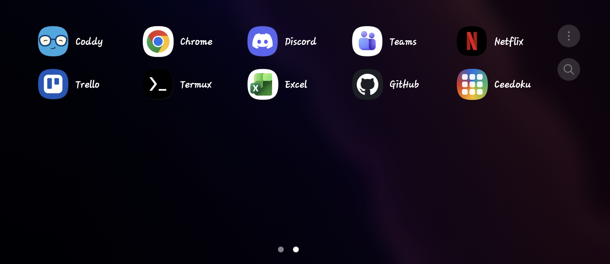

Installation Guide
There are 2 methods of installing Ceedoku.
Below are guides on how to install Ceedoku using both of these ways.
Method 1 — Installing the native application
Note
Some devices do not support installing Ceedoku this way.
Those devices include, but are not limited to, Android, iOS, GrapheneOS and ChromeOS devices.
To install the native application version of Ceedoku (aka the Ceedoku Client),
you can use the website below to find the installer for your device.
https://ceedoku.github.io/client
If you don't know which platform your device uses:
Your platform is the operating system and processor architecture your device uses. For example, a Windows PC with an Intel or AMD processor is usually Windows x64, while a Raspberry Pi is usually Linux ARM64.
Windows: Open Settings → System → About and look for System type.
macOS: Open Apple menu → About This Mac and look for whether your Mac has an Apple silicon or Intel processor.
Linux: Open a terminal and run:
uname -m-
x86_64→ x64 -
aarch64→ ARM64 -
armv7l→ ARM32
Method 2 — Installing the PWA (Progressive Web App)
This method shows you how to install the PWA version of Ceedoku (aka the browser-based Ceedoku application).
Note
Firefox does not support installing Ceedoku as a PWA application.
Do not try to use Firefox to install Ceedoku as a PWA as it will not work.
Step 1:
Open Ceedoku in your browser.
Step 2:
Click the button with the 3 dots (or a similar menu style button).
Step 3:
Click the option that says: 'Install/Add Shortcut' (If it is not visible, scroll down).

Step 4:
Click 'Install' and wait for the app to finish installing, then proceed.

Step 5:
Locate the app on your home screen and open it.

And, you're done! Have fun playing Ceedoku! =D
Installation guide made by Ceebug.